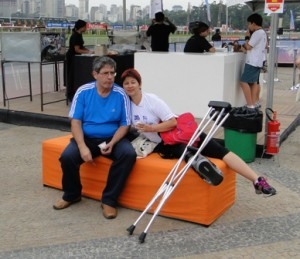
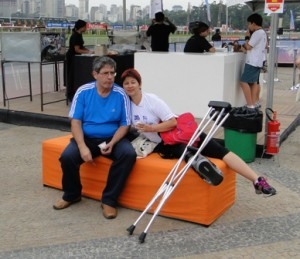
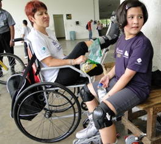
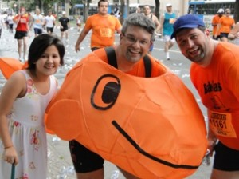

vamo, vamo, vamo…
Ana Shibata
Sou advogada, mãe, esposa, amiga, companheira. Há algum tempo pretendia sair do sedentarismo e assim foi com aulas de yoga, depois academia para baixar o colesterol e numa inscrição para uma corrida feminina feita mais pelo kit (sem nunca ter corrido ou treinado) o bichinho do quero mais me pegou e, agora trilho por este caminho tendo como mantra "Mens sana in corpore sano".
Home page: http://urbi-orbi-trek.blogspot.com/
Posts by Ana Shibata
CORRIDAS DE MONTANHA – I Etapa-Paranapiacaba
77 years
by Ana Shibata
in Ex-sedentário

Quando fiz a inscrição para a prova em Paranapiacaba o regulamento dizia que o percurso curto seria de 6k.
Semana passada acessei o site da prova, um aparte — mudou de visual, ficou mais bacana e interativo, tem uma entrevista sobre essa prova, modalidade em que farei minha estréia. Depois de ver o video fiquei preocupada; 1- percurso será de 7km?!; 2- mapa do percurso não achei no site e 3- na entrevista dizia que haverá percursos com água.
Vixémmmmmmmmmm, não estou preparada para correr na água, pois não tenho tenis adequado, e o que tenho usado, já comprovei que em montanha não é negócio, não rola, aliás escorrega bastante.
Mandei um e-mail pedindo mapa e confirmação sobre o percurso.
Comentei com Claudio sobre o fato de como ficará o tenis molhado durante a corrida e a resposta não foi agravádel, ele disse “…. vai escorregar!”
Karambola!, pensei, ou melhor, nem pensar em escorregar………… já veio o temor do tornozelo. Tratei de comprar logo um tenis para correr montanha e pisar em água. Resolvido esse entrave.
Ficava faltando a confirmação dos km e mapa do percurso.
Eis alguns dados sobre a prova, que estão no site:
1 – existem várias passagens por água desde o km2 até o km5.
2- link para o percurso CURTO: http://corridasdemontanha.com.br/site/?p=400
3- para maior comonidade seu kit para a prova de Paranapiacaba poderá ser retirado na sexta feira (25) na loja KAYLASH CONCEPT STORE das 12h00 até as 19h00 na Av. Sabiá, 202 – Moema – SP.
No sábado(26), dia da corrida, o kit deve ser retirado exclusivamente no ANTIGO MERCADO DE PARANAPIACABA a partir das 10h00 da manhã.
4- Recomendamos que os atletas antecipem a retirada de seu kit na sexta feira ou na parte da manhã do sábado. Caso não tenha recebido o termo de participação é só acessar o site e imprimir. (http://www.minhasinscricoes.com.br/CM_PARANAPIACABA/2011/)
5- Postos de hidratação:
PERCURSO LONGO
QUILOMETRO 2
QUILOMETRO 5
QUILOMENTRO 9
CHEGADA HIDRATAÇÃO SUUM
PERCURSO CURTO
QUILOMETRO 3
QUILOMENTRO 5,5
CHEGADA HIDRATAÇÃO SUUM
6- Cronograma do Evento:
Sexta feira:
12h00 inicio da retirada de kit na loja KAYLASH CONCEPT STORE
19h00 termino da entrega de kits da sexta feira
Kailash Concept Store São Paulo
Av. Sabiá, 202 – Moema
São Paulo, SP. Fone (11) 5051 4669Sábado:
10h00 inicio da retirada de kit no ANTIGO MERCADO DE PARANAPIACABA
14h45 Concentração para a largada do percurso longo
15h00 largada percurso longo
15:10 Concentração para a largada do percurso curto no ANTIGO MERCADO
18h00 Premiação
19h00 Encerramento
Ae pessoal, nos veremos lá!!!
Nos cobramos demais!
107 years
by Ana Shibata
in Ex-sedentário

O texto abaixo espelha bem o que sinto as vezes …..
Embora seja direcionado para as mulheres, cabe perfeitamente aos homens, ops, ao público masculino nas devidas proporções ou inversões.
Tá ai, uma reflexão para o final de semana!!!
Não há nada que me deixe mais frustrada do que pedir sorvete de sobremesa, contar os minutos até ele chegar e aí ver o garçom colocar na minha frente uma bolinha minúscula do meu sorvete preferido. Uma só.
Quanto mais sofisticado o restaurante, menor a porção da sobremesa. Aí a vontade que dá é de passar numa loja de conveniência, comprar um litro de sorvete bem cremoso e saborear em casa com direito a repetir quantas vezes a gente quiser,sem pensar em calorias, boas maneiras ou moderação.
O sorvete é só um exemplo do que tem sido nosso cotidiano.
A vida anda cheia de meias porções, de prazeres meia-boca, de aventuras pela metade.
A gente sai pra jantar, mas come pouco. Vai à festa de casamento, mas resiste aos bombons.
Conquista a chamada liberdade sexual, mas tem que fingir que é difícil (a imensa maioria das mulheres continua com pavor de ser rotulada de ’fácil’).
Adora tomar um banho demorado, mas se contém para não desperdiçar os recursos do planeta.
Quer beijar aquele cara 20 anos mais novo, mas tem medo de fazer papel ridículo.
Tem vontade de ficar em casa vendo um DVD, esparramada no sofá, mas se obriga a ir malhar. E por aí vai.
Tantos deveres, tanta preocupação em ’acertar’, tanto empenho em passar na vida sem pegar recuperação…
Aí a vida vai ficando sem tempero, politicamente correta e existencialmente sem-graça, enquanto a gente vai ficando melancolicamente sem tesão…
Às vezes dá vontade de fazer tudo ’errado’.
Deixar de lado a régua, o compasso, a bússola, a balança e os 10 mandamentos.
Ser ridícula, inadequada, incoerente e não estar nem aí pro que dizem e o que pensam a nosso respeito. Recusar prazeres incompletos e meias porções.
Até Santo Agostinho, que foi santo, uma vez se rebelou e disse uma frase mais ou menos assim:
’Deus, dai-me continência e castidade, mas não agora’…
Nós, que não aspiramos à santidade e estamos aqui de passagem, podemos (devemos!) desejar várias bolas de sorvete, bombons de muitos sabores, vários beijos bem dados, a água batendo sem pressa no corpo, o coração saciado.
Um dia a gente cria juízo.
Um dia.
Não tem que ser agora.
Por isso, garçom, por favor, me traga:
cinco bolas de sorvete de chocolate, um sofá pra eu ver 10 episódios do ’Law and Order’, uma caixa de trufas bem macias e o Richard Gere, nu, embrulhado pra presente. OK?
Não necessariamente nessa ordem.
Depois a gente vê como é que faz pra consertar o estrago . . .
Danuza Leão
Enfim, um treino familiar
107 years
by Ana Shibata
in Ex-sedentário
Ensaiamos mas ficou apenas na ensebação um treino durante o feriado prolongado do Carnaval. As condições climáticas ditavam um findi prolongado para assistir um filme na TV ou DVD, acompanhado de pipoca ao lado das filhotas, aqueles dias de preguiça que são compensados para ficar curtindo a família.
Estou meio assim, com preguicinha e nem posso dizer que é uma fase, estou mais para quem vai começar uma dieta num dia. Gostaria de ser igual aos nossos colegas, determinados, treinam sério e conseguem ótimo desempenho nas provas, mas não sou, acho que talvez precise mudar a cor do cabelo, quem sabe não mudo de idéia……….rs
Assim, a semana passada foi curta com o feriado do Carnaval e nos trouxe uma sexta feira tenebrosa com um mega terremoto que assombrou a terra natal de meus avôs, seguido por um tsunami que devassou grandes áreas. As imagens que vejo cedinho ao acordar são de terror que em alguns minutos se transformam em temor com a notícia de que o reflexo do tsunami sofrido no Japão possa chegar aos EUA e depois na América do Sul, o que não aconteceria na intensidade prevista e que me deixou aliviada.
As conseqüências dessa tragédia que são noticiadas todos os dias, me faz agradecer por morar num país abençoado e rezar por aqueles que perderam sua família, seus amigos, seus bens materiais, sofrem com escassez de alimentos, falta de iluminação, etc, etc.
Enfim, o final de semana não seria de muito sol.
Domingo logo cedo o maridão, no estilo sargentão me acordou às 7hs e um tanto chamando para correr no minhocão. Olhei pela janela e vi o tempo nublado, enrolei um pouco, conversamos outro tanto, depois veio a Syssi, e volta e meia o sargentão cobrava rapidez para tomar café para treinar.
Fizemos nosso breakfast, o sargentão encheu o pneu da bike da Syssi, convidei a melinha para nos acompanhar nessa empreitada, enfim, quando saímos de casa eram quase 11 hs, tempo voou e nem percebi.
O maridão me surpreendeu com a vontade de treinar, seguiu no seu trotinho e o perdi de vista, Sy pedalava e nos esperava, Melinha e eu começamos na mesma perna, depois parou para beber água e ficou mais atrás. Vejo depois o maridão voltando na mesma batida, eu já apresentava sinais de cansaço, pois subestimei o tempo, o sol já queimava nossos miolos e eu fiquei apenas na caminhada.
Desta vez não consegui fazer o percurso todo, ou seja, ir de ponta a ponta do Minhocão, Melinha também não conseguiu o sol estava forte e o horário inapropriado. O maridão trotou todo o percurso que para mim não é novidade, ele faz seus treininhos durante a semana.
Nosso treino/caminhada durou 54 min. de insanidade por fazê-lo em horário inapropriado, mas teve como prêmio um grande copo de caldo de cana bem gelado, uma ducha fria e a satisfação de ter conseguido reunir a família.
Ah, meu tornozelo, zerado, ops, alguns km rodados, sem qualquer lembrança de que um dia (não muito distante) sofri entorse.
Agora preciso disciplinar-me mais e correr contra o tempo, porque no final do mês Paranapiacaba me aguarda……………….. lilás…………. a CIA EX-SEDENTÁRIO VAI CORRER PELAS MONTANHAS!!!!
Uma ótima semana
Pé na Estrada …
117 years
by Ana Shibata
in Ex-sedentário

Opsssssssssssss, ou melhor, Pé no Minhocão, assim foi meu domingão (uauhhhhhhhhhh, até rimou!!!).
Durante a semana preparei o espírito da Syssi para me acompanhar num treininho no minhocão no domingo bem cedo, porque semana passada, acordei as 8 hs e o sol parecia de meio-dia, ninguém merece treinar ou apenas caminhar debaixo de sol quente de fritar ovos em asfalto, né não?!
Esqueci de contar estou meio que liberada pelo fisio para fazer caminhadas e trotes para sentir meu tornozelo.
Sábado à noite fomos dormir com essa promessa. Domingo acordei antes das 7 hs, não vi sol, apenas um céu nublado, perguntei ao maridão se ele iria me acompanhar, ele olhou nos meus olhos e em poucos segundos disse que sim, pediu acordasse a Syssi…. Hummmmm, pensei, Syssi não vai acordar, mas fui, chacoalhei seus pés e fui tomar meu lanche, passei pelo quarto das meninas e dei outra cutucada, ai ela acordou, revirou os olhos, abriu-os me fitando e saiu da cama para vestir-se. Melinha não tomou nem conhecimento do que acontecia, só pensa em dormir……
Tomamos nosso lanche antes do treino, e fomos para o minhocão. Iniciamos nosso treininho pela subidinha que tem logo após a Av. São João, trecho que todos os que correm a São Silvestre conhecem.
(olha ela ai, do lado direito da foto)
O sol já estava despontando e, naquele pequeno trecho do minhocão ele se fez presente, eu fui à frente por ordens do maridão, então intercalei com trotinho e caminhada forte. Ele apenas na caminhada forte e como tem as pernas maiores, então passadas maiores, eu meio que disputando para ele não me passar, mas a Syyyyyyy, ficou bem atrás, e lá fomos nós até um dos lados do minhocão (Av. Francisco Matarazzo), dei a volta e continuei (neste momento o Sol ficou inibido e as nuvens tomaram conta do céu), passei por ele, depois a Sy peguei no caminho. Muito mais adiante, ele me alcançou e não vimos a Syssi, ficamos olhando por uns segundos, a pedido continuei e ele ficou no aguardo dela, agora ia no sentido R. da Consolação, as vezes virava para ver se os via e nada, fiz o retorno e voltei, bem depois os avistei sentados no meio da pista (que divide as vias do tráfego), belos e formosos descansando ……….. nem posso me queixar porque eles saíram cedo da cama para me acompanhar, fizeram um pouco mais da metade do percurso com 3k e eu 5,5 km.
Treinar no minhocão para mim teve um gosto de “posso voltar”, embora na sexta eu não tenha feito nenhum exercício na esteira, porque a semana passei com uma dorzinha no calcanhar e achamos que foi devido ao sapato ser bem baixo, deixei o teste de São Tomé para domingo. No começo senti uma fisgada nos ligamentos, mas depois não senti mais nada.
Ao voltarmos para casa resisti bravamente ao pastel de feira, deixando apenas para um belo caldo de cana geladinho com bastante limão. Não coloquei gelo ou coisa assim, procedi como num dia normal para sentir como ficaria o tornozelo depois de uma puxada dessas. Sei que a curiosidade mata……….. enfim………….. nada, não senti dores fortes, não inchou e hoje arrisquei a andar de saltinho de 5 cm.
Estou muito feliz, porque ficou somente aquele sentimento da dorzinha que já me acompanha desde o acidente e que segundo o fisio ficará um pouco mais e desaparecerá gradativamente, peninha a Syssi ter ficado hoje com dor nas coxas, mas sei que é aquela dorzinha gostosa.
Quero desejar a todos uma ótima semana, porque a minha começa com uma satisfação impar, posso treinar mais!!!
Aprendi que são os pequenos acontecimentos diários que tornam a vida espetacular. (William Shakespeare)
Propriocepção II
57 years
by Ana Shibata
in Ex-sedentário
Semana passada estive na ortopedista que considerou meus ligamentos ótimos (os novos…..rs) e continuar as sessões de fisioterapia introduzindo marcha……. porque externei minha vontade de estar correndo no final deste mes!!!
Na verdade eu já vinha há 1 semana fazendo alguns exercícios para fortalecer o tornozelo, e agora com o aval da orto, ontem finalmente eu dei um grande passo nesta fase de recuperação……….. fiz 15 minutos de esteira alternados entre trotinho e caminhada…………. bom suei pacas a camiseta………. e valeu D ++++++, senti que vai faltar pulmões, já que durante esta fase de fisio os exercícios focaram apenas as pernas – no início para compensar estar andando de muletas pisando apenas com 1 pé; depois andando com robofoot…
Bom, tenho sentido queimar as pernas nos exercícios de fortalecimento, minha perna direita já está aguentando o impacto reduzido, mas ontem foi a grande prova………. durante o treino na esteira não senti dor e a prova realmente seria como o tornozelo estaria hoje………….. MUITO BOM!!! sem dor, sem lembrança de que outrora os ligamentos foram rompidos. Hoje até fui mais ousada, sai de casa sem o imobilizador de tornozelo que até ontem eu usava, pois o fisio pediu para eu desmamar do imobilizador.
Tenho sessões de fisio as segundas e quartas e com o aval dele nesta sexta irei fazer uma caminhada de 20 minutos para sentir como está a finada lesão. Domingo deverei treinar no minhocão um cadinho, tudo isso por recomendação do fisio, agora é observar como reage o tornozelo.
Enfim, no final do mes pretendo fazer minha primeira corrida de rua oficial e, quem sabe com o mesmo tempo de minha primeira corrida do ano passado, 43 min… essa é minha meta deste mes.
Sei que em março estarei Z E R A D A………..e pretendo fazer 6k na corrida de montanha em Paranapiacaba.
Aeeeeee, estou voltando …..

Propriocepção
37 years
by Ana Shibata
in Ex-sedentário

Desde o dia 03 de janeiro estou em nova fase da fisio, estou fazendo exercícios de fortalecimento, a famosa propriocepção.
É uma palavra esquisita, mas um termo muito utilizado na fisioterapia, que significa o controle neuromuscular reativo: devem induzir “perturbações” articulares inesperadas, deslocamentos laterais, saltos, saltitos, deslocamentos frontais e de costas, exercícios com bola, chutes, arremessos, etc.
Atividades funcionais: têm como objetivo retornar o atleta/desportista ao nível de atividade antes da lesão, restaurando a estabilidade funcional e dos padrões de movimentos específicos para o esporte, minimizando o risco de nova lesão.
O objetivo é avaliar se o atleta/desportista está recuperado e pronto para retornar às atividades desportivas. Neste caso, deve-se incluir exercícios que envolvam posicionamentos e manobras em que a articulação fica vulnerável, adaptando as tarefas de movimento próximas do gestual motor desportivo utilizado no esporte que atua.
É importante considerar que os exercícios de controle neuromuscular (proprioceptivo) devem se fazer presentes no processo de recuperação fisioterapeutica, sendo atletas ou não. Em sendo atletas ou praticantes de atividades desportivas regulares, estes são necessários para restabelecer o controle e a eficiência biomecânica do movimento, atividades que geram instabilidades para ganhar estabilidade funcional.
Portanto, minha fisio tem sido um pouco puxada, equilíbrio em mini prancha, andar na ponta dos pés, só com o calcanhar e apoiando apenas o lado externo dos pés. Isso foi na primeira semana.
Já na segunda semana os exercícios foram mais incrementados, agora estou pulando na cama elástica (o impacto é mínimo), e outros exercícios para fortalecimento dos ligamentos e, o que é mais legal, tenho suado a camisa mesmo……….rs
Ainda estou andando de tornozeleira apenas para sair (em casa fico sem), o fisio está contente com minha recuperação, e eu mais ainda……..rs. Só estou aguardando a ortopedista me liberar para outros esportes.
Tenho andando um pouco mais, os descansos com a perna mais alta há muito deixei de fazer e tenho aguentado bem, só a noite que a regiao em volta do tornozelo fica um pouco sentida (ele insiste em ser lembrado). Não consigo subir ou descer escadas direito, o tornozelo ainda não colabora muito, mas isso é questão de tempo.
Já li na net que para prevenção de lesões, deve-se incluir no programa de aquecimento, exercícios de equilíbrio estático e dinâmico baseados na interação entre corpo e ambiente, de forma a evitar lesões mais sérias e é o que farei doravante.

Minha qualidade do tempo…….
67 years
by Ana Shibata
in Ex-sedentário

Vivemos duas metades do tempo de uma vida que tem como divisor o HOJE, e que são exatamente o futuro e o passado.
Não há como ter esse equilíbrio em termos quantitativos, pois o futuro será cada vez menor do que o passado em sua medida temporal. Devemos tentar equalizar essas parcelas de vida de outra forma, ou seja, em termos qualitativos.
Vou tentar fazer isso: quero que a qualidade do tempo que tenho à frente seja melhor e maior daquela que consegui ter até agora e, penso eu que um bom caminho será a escolha dos verbos que passarei a conjugar mais, em substituição àqueles que tentarei conjugar menos.
Então me ocorrem alguns de imediato:
DIVIDIR em vez de CONCENTRAR;
DOAR em vez de ACUMULAR;
INCENTIVAR em vez de CRITICAR;
FAZER em vez de COBRAR;
PEDIR em vez de MANDAR;
ENSINAR em vez de CONDENAR;
PRESTIGIAR em vez de SE OMITIR;
COMPARECER em vez de ACOMODAR;
DIZER em vez de CALAR;
ESQUECER em vez de ODIAR;
RESPEITAR em vez de IGNORAR;
RIR em vez de PRAGUEJAR;
SORRIR em vez de DESDENHAR;
SONHAR em vez de ESTACIONAR; e
VIVER em vez de MORRER.
E se conseguir fazer isso com respeito ao próximo, ao coletivo e, com amor, generosidade e desprendimento, certamente terei contribuído para a melhor qualidade de vida dos que me cercam, única forma possível de pretender que a minha própria vida tenha mais qualidade e sentido.
Sei que é mais fácil falar do que por em prática, assim como também sei que não há nenhuma chance de se mudar o que quer que seja senão dando o primeiro passo. E este, asseguro, estou dando.
Desejo uma linda semana e que a solidariedade, o respeito e o amor sobrepujem o ódio, os preconceitos e as desigualdades.

Feliz Ano Novo, 2011 promete…
157 years
by Ana Shibata
in Ex-sedentário
De início quero desejar a todos nossos colegas, amigos, amigos dos amigos, seguidores deste blog um Feliz Ano Novo!!!
Depois do meu acidente, ou melhor, do meu entorse no tornozelo direito grau II, tive minha rotina diária mudada literalmente, passei 3 semanas andando de muletas, fui proibida de colocar o pé direito no chão e sessões de fisioterapia já na segunda semana do acidente.
Apesar de aleijada, não fiquei afastada do escritório, só que nessa fase meu tempo acabou se tornando restrito, minha locomoção lenta, gelo no local a cada 3 hs, fisio e, em casa além do repouso acabei por me desligar de muitas coisas, meu pensamento voava ao tempo de recuperação, controlar o inchaço do tornozelo mantendo sempre a perna elevada.
Só que novembro acabou tornando-se um mês frustrante, havia feito inscrição para correr todos os finais de semana. Em alguns correria com Melinha e em outro iríamos assistir Syssi. Acabei por administrar essa frustração, pedindo para o Igor correr no meu lugar, aliás o tempo dele foi bom e Melinha também, o que me deixou feliz por eles.
Inscrevi a Syssi na Corrida Infantil da Corpore e fui vê-la participar de cadeira de rodas, até esbarramos com o Claudião por lá, lógico, Henrique também participou!

A entrega do kit d Circuito Vênus aconteceu no Jóquei – que não tem acesso para deficientes, uma grande falha –, desci as escadarias de muletas, devagar mas fui, olhei alguns stands dos patrocinadores e Syssi fez uma aula de Pilates, até pensei em participar da corrida com o auxílio do Igor empurrando a cadeira de rodas, no fim desisti, achei que seria muito sofrimento para ele.
 

Após 3 semanas do acidente, fui liberada para andar de muletas com o pé no chão e mais sessões de fisioterapia. Ah, detalhe, sempre de robofoot dia e noite, um trem horrível para andar, mas de muita estabilidade para meu tornozelo.
Durante este tempo, acabei por descobrir uma nova modalidade, acompanhando Syssi em suas aulas de patinação no Ibirapuera me encantei com o esporte.

Frustrada tentei ficar longe dos esportes, só tentei porque através de mala direta recebi um convite para patinar na Av. Paulista no dia 25 de dezembro a noitinha para ver as decorações natalinas na avenida que é tida como o coração financeiro da cidade. Como passamos no Natal aqui em Sampa, dia 25 eu, Silvio e Syssi fomos participar desse evento, mas tipo assim (rs), eu de robofoot e bengala só fiquei na vontade e acabei por andar na Paulista vendo e filmando as decorações, o tempo estava maravilhoso, muitas pessoas na rua usando 1 pista da avenida, os carros trafegando devagar, todos sem stress, uma Av. Paulista difícil de ver em outras ocasiões. O papai Silvio foi correndo acompanhar a filhota Syssi que patinou com os demais. (agora esse problema está solucionado, Silvio acabou de adquirir seu patins!!)


Já na 6ª. semana do acidente eu andava de imobilizador de tornozelo apenas em casa.
Como não podia ser diferente, passei o Natal de robofoot, mas ansiosa pelo retorno a ortopedista no dia 30/12 que ao examinar meu tornozelo (o calcanhar já estava firme, uauhhhhhhhh) determinou andar somente com imobilizador de tornozelo, liberando para hidroginástica e bicicleta sem peso. Esse foi meu presente de Natal!!! O diagnóstico de que o ligamento já restabeleceu.
Dia 31 o dia mais esperados por algo em torno de 15.000 corredores além do Claudião, Alex e Thiago, aconteceu a São Silvestre e, para prestigiar nossa galera e tantos outros corredores fomos (minha vizinha para ver o sobrinho, eu e Syssi para ver os Ex-Sedentários) até a Av. São João, um pouco antes da subida do Elevado, estava eu lá como espectadora para ver a corrida, tão diferente de outrora.
Confesso que nem na TV eu apreciava ver a SS, mas este ano sai para a rua. Depois da corrida feminina, vimos os batedores acompanhando a elite masculina e mais atrás o restante dos corredores……… era um mar de pessoas descendo a S. João sem noção ……, meu coração disparava, a vontade de estar correndo (e nem precisava ser na SS, em qualquer corrida) foi muito grande, mas devo me limitar a apenas sentir emoções neste momento.
Enquanto eu filmava na câmera, minha amiga via a transmissão no MP7, ficamos ali sabendo da vitória da queniana e um pouco mais tarde da vitória do Marilson, mas o mar de corredor continuava descendo a S. João e dentre eles o Claudião que acabei por ver de relance depois da passagem do sobrinho de minha amiga. Dali fomos acompanhar a corrida na Av. Rio Branco esquina com Helvetia, nesse trecho os corredores já demonstravam cansaço … foi então que consegui ver o Claudião acompanhado do Alecão e tiramos umas fotos juntos………
 
Agora estou em nova fase de tratamento, fortalecimento muscular e treinamento proprioceptivo para que não ter lesão recidiva. Incomoda apenas andar de imobilizador de tornozelo com tênis. Em casa, tenho andado descalça, já que o imobilizador prende um pouco a circulação.
Enfim foram 60 dias e estou me recuperando, mas ainda sinto seus sinais, sei que ainda tenho um pouco mais de tempo para voltar a praticar esporte de impacto, mas é questão de tempo, quem sabe no final de fevereiro eu não volte para as ruas?! Quer correndo….. ou patinando.
Estou voltando………….. deixo aqui meu grande abraço e um 2011 com muita, mas muiiiiiiiiiiiiiiiita S A Ú D E e quem sabe não nos esbarrarmos nas corridas de rua durante o ano?!
Está chegando a hora da estréia….
97 years
by Ana Shibata
in Ex-sedentário

TIC…….TAC……….TIC………..TAC…………..
O relógio não para e o grande dia para a estréia do nosso Ex-Sendentário Claudião em sua PRIMEIRA Maratona está chegando!!!!
Os sentimentos antes, durante e pós prova ele mesmo poderá relatar…….. e nós aqui nos bastidores estamos na maior torcida…. Eu que o diga, já que estou de molho, levando a vida de pernas para o ar.
A lição foi feita, a força de vontade e os treinos nos meses que antecederam servirão de alicerce para esse grande momento, agora olhar para a frente, segurar os batimentos do coração para o momento certo e pé na tábua……..
Claudião, a “família” e os amigos ficarão por aqui unidos em pensamento ao seu grande momento.
É isso ai………. VAMO ……VAMO……VAMO……….
GOOOOOOOOOOOOOOOOOD LUCKKKKKKKKKKKKKKK,
BOOOOOOOOOOOOOOOOAAAAAAAA SORTEEEEEEEEEEEEEEEEEE
APROVEITE ESSE MOMENTO!!!!!!!!!!

.jpg "DSC01729 (576x1024)")
.jpg "DSC01730 (1024x576)")
.jpg "DSC01731 (1024x576)")
.jpg "DSC01738 (1024x576)")
.jpg "DSC01837 (1024x576)")
.jpg "DSC01935 (1024x576)")


Últimos comentários